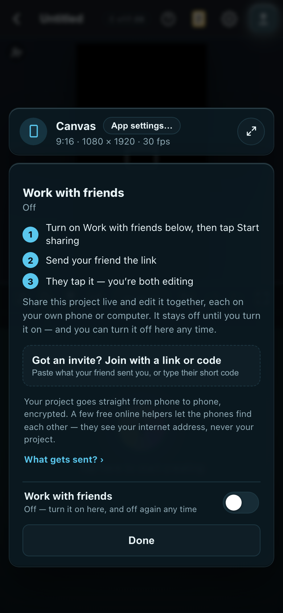
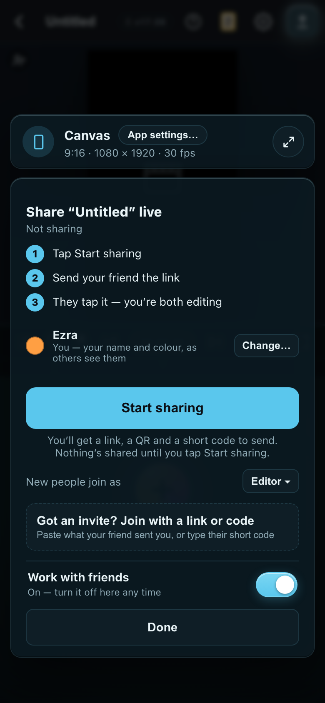
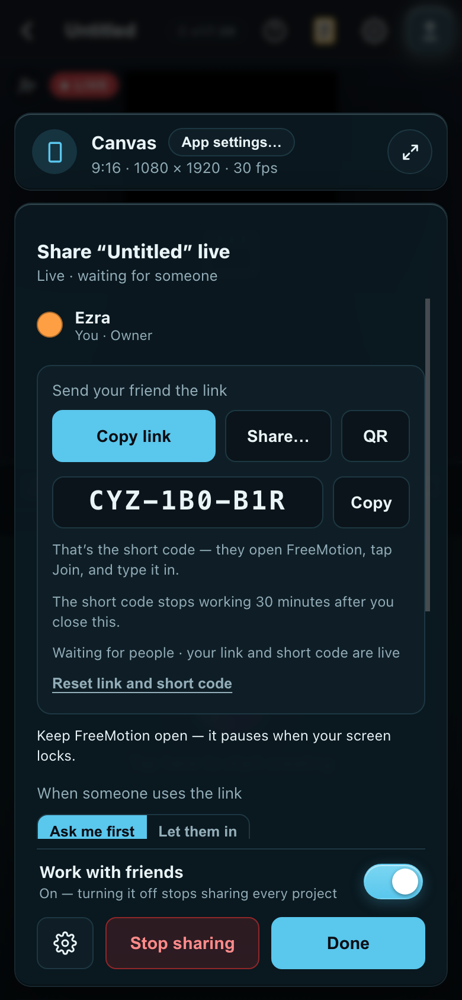
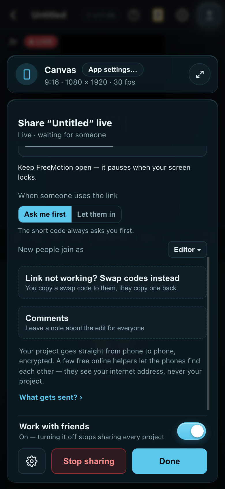
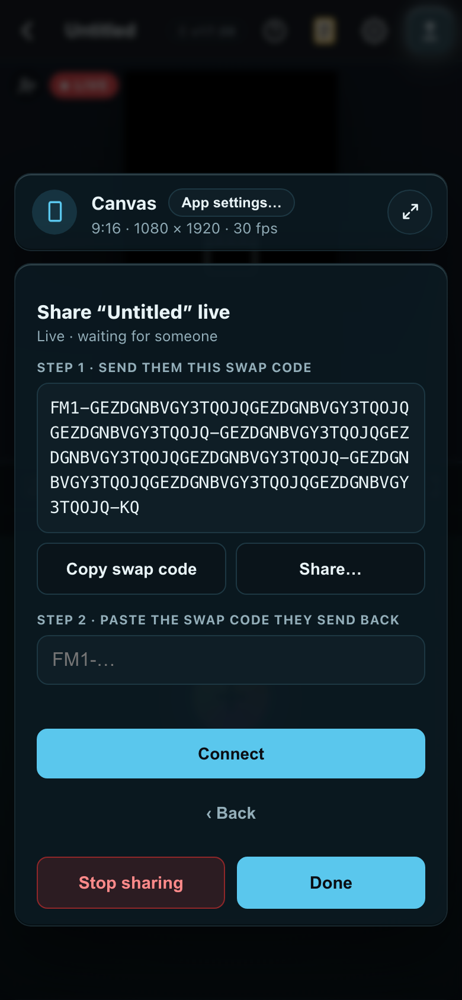
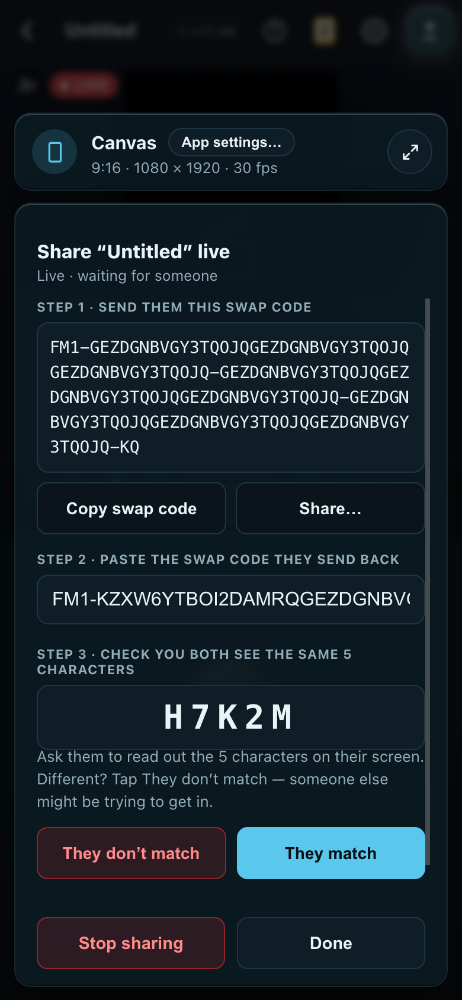
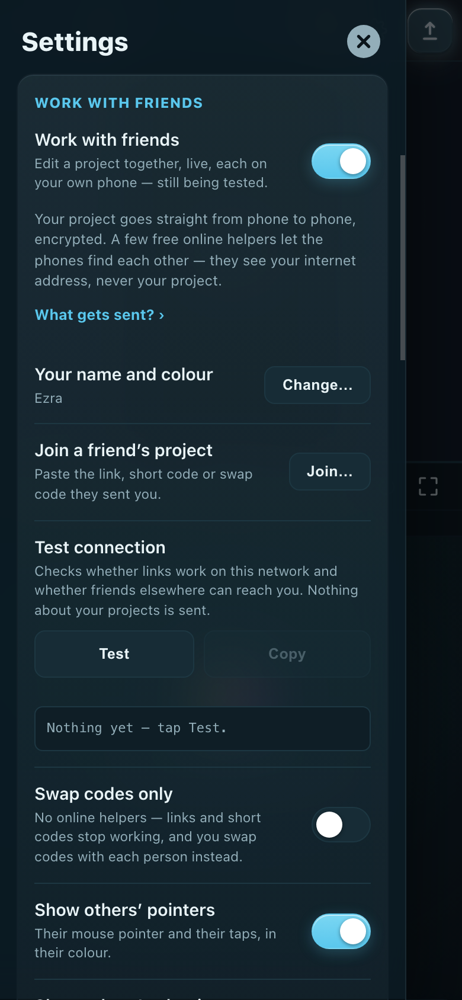
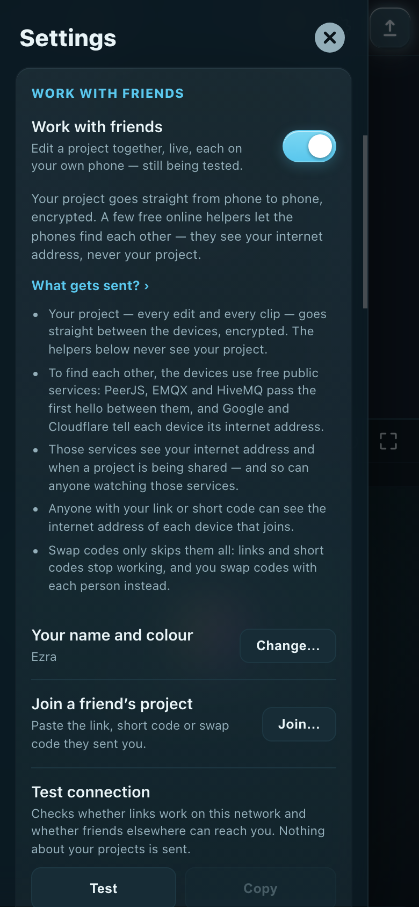
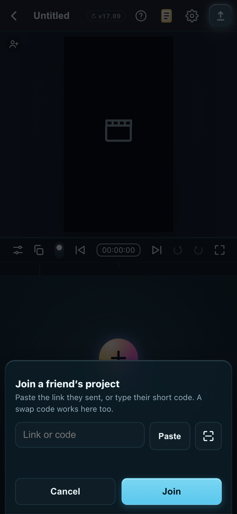

#967 batch 4 — plain words and one name
Every line a first-timer reads, old → new, grouped by screen. Words only — nothing moved. Built to the recommended pick of each question.
The four picks (all A, recommended):
- The feature is Work with friends, the button is Share live, the other side is Join. “Still being tested” is said once, on the Settings switch.
- The 9-character code is always the short code; the long FM1 block is the swap code. Neither is ever just “code”.
- Follow is Watch along, with a line saying your screen follows theirs.
- Privacy is one plain sentence; What gets sent? › opens the full list, every service still named. Once per screen.
The screens, at 390 × 844









Settings
Live collaboration (preview)Work with friends
Edit one project with people on other devices. Free public services — relays run by PeerJS, EMQX and HiveMQ, and Google and Cloudflare’s address lookup — help the devices find each other. They see internet addresses and when a room is in use, never your project; then the devices talk directly, encrypted. Codes only skips them all.Edit a project together, live, each on your own phone — still being tested.…with the privacy sentence and “What gets sent? ›” under it (below).
Join a live project — Paste the link or code they sent you, or type the short code.Join a friend’s project — Paste the link, short code or swap code they sent you.
Test connection — Tries the free connection services and this device’s live connections, then says plainly what works on this network.Test connection — Checks whether links work on this network and whether friends elsewhere can reach you.
Connect with codes only — No free relay at all: nothing but the two devices. Invite links and short codes stop working — you swap a long code with each person instead.Swap codes only — No online helpers — links and short codes stop working, and you swap codes with each person instead.
FreeMotion v17.09 · everything stays on this deviceFreeMotion v17.09 · projects only leave this device when you share liveWith the switch on. Off, the old line is true again and comes back.
Turn off live collaboration? … The links and codes you handed out stop working, and everyone keeps their own copy.Turn off Work with friends? … Your links and short codes stop working, and everyone keeps their own copy.
Privacy — on the Friends block, the Share panel, Sharing settings and Settings (once each)
Free public services help the devices find each other: relays run by PeerJS, EMQX and HiveMQ, and Google and Cloudflare’s address lookup. They see your internet address and when a room is in use, and so can anyone watching those relays; anyone with the link or code can see the address of each device that connects. They never see your project — it goes straight between devices, encrypted.Your project goes straight from phone to phone, encrypted. A few free online helpers let the phones find each other — they see your internet address, never your project. What gets sent? ›
What gets sent? › opens: Your project — every edit and every clip — goes straight between the devices, encrypted. The helpers below never see your project. · To find each other, the devices use free public services: PeerJS, EMQX and HiveMQ pass the first hello between them, and Google and Cloudflare tell each device its internet address. · Those services see your internet address and when a project is being shared — and so can anyone watching those services. · Anyone with your link or short code can see the internet address of each device that joins. · Swap codes only skips them all: links and short codes stop working, and you swap codes with each person instead.Every service is still named — the S6 review’s rule — one tap down.
Friends block — off
Share it live with friendsShare live with friendsThe bar above the card.
Work on this with friends · Still being testedWork with friends · Off
Share this project live and edit it together from your own phones or computers. It is still being tested, so it stays off until you turn it on — and you can turn it off here any time.Share this project live and edit it together, each on your own phone or computer. It stays off until you turn it on — and you can turn it off here any time.
Friends block — not sharing
Share “Untitled” · Not shared yetShare “Untitled” live · Not sharing“Yet” read, after a stop, as if it never happened. The bar says “Not sharing · invite people”.
You / You — pick the name and colour others will seeYou / Pick the name and colour others will see
You’ll get a link, a QR and a short code to send. Nothing is shared until you tap it.You’ll get a link, a QR and a short code to send. Nothing’s shared until you tap Start sharing.
Share panel — live
Invite with a link or a codeSend your friend the link
They open FreeMotion, tap Join, and type it in.That’s the short code — they open FreeMotion, tap Join, and type it in.
Starting the relay…Getting your link ready…
Waiting for people · the link and the code are liveWaiting for people · your link and short code are live
Reconnecting to the free connection service… the link and the code work again once it’s back.Reconnecting… your link and short code work again once it’s back.
Couldn’t reach the free connection service — use Connect with a code below.Your link can’t get through on this network — swap codes instead, below.
Copied — but the link won’t work until the free connection service can be reached. Use Connect with a code.Copied — but the link won’t work on this network right now. Swap codes instead, below.
Reset link and codeReset link and short code
Connect with a code instead — No relay at all — you send them a long code and they send one backLink not working? Swap codes instead — You copy a swap code to them, they copy one back
Codes only on: Add someone with a code — No account, no server — you send them a code and they send one backSwap codes with someone — No online helpers — you copy a swap code to them, they copy one back
Codes only is on — The link and the short code need the free relay, which this device is set not to use. People join by swapping connection codes instead.Swap codes only is on — Links and short codes need the online helpers, which this device is set not to use. People join by swapping codes with you instead.
Comments — Leave a note about the edit for everyone — it never stops an exportComments — Leave a note about the edit for everyoneAnd the empty Comments card drops “it never gets in the way of an export” too.
Role menu: Editor · Commenter · ViewerEditor — can change anything · Commenter — can leave notes only · Viewer — can only watchIn “New people join as” and in each person’s menu. The button still shows the short word.
Follow · Stop followingWatch along — your screen follows theirs · Stop watching along
Stop sharing? — Everyone here keeps their own copy. The codes you have handed out stop working.Stop sharing? — Everyone keeps their own copy. Your link and short code stop working.
Sharing settings (the gear)
Codes only — nothing but the devices themselvesSwap codes only — no online helpers, just the devices
Having trouble? Connect with a codeLink not working? Swap codes instead
Swapping codes — his side
Step 1 · send them this code · Making a code… · Copy codeStep 1 · send them this swap code · Making a swap code… · Copy swap code
Step 2 · paste the code they send backStep 2 · paste the swap code they send back
Step 3 · check these letters match theirs — Ask them to read out what their screen shows. If it is different, somebody is in the middle — stop.Step 3 · check you both see the same 5 characters — Ask them to read out the 5 characters on their screen. Different? Tap They don’t match — someone else might be trying to get in.
Stopped — those letters did not match. That code is used up; add them again for a fresh one.Stopped — the 5 characters didn’t match. That swap code is used up; swap codes again for a fresh one.
Not let in — they’ll need a fresh code.Not let in — they’ll need a fresh swap code.
That code is for a different session.That swap code didn’t check out — swap codes again for a fresh one.
Joining — the friend’s side
Join a live projectJoin a friend’s project
Paste the invite link they sent, or type the short code they read out. A long code from “Connect with a code” works here too.Paste the link they sent, or type their short code. A swap code works here too.
Copy this and send it back to them — they paste it in Step 2 · Copy codeNow copy this swap code and send it back to them — they paste it in Step 2 · Copy swap code
Read these letters back to them — They must see the same five. If they don’t, somebody is in the middle — stop.Check you both see the same 5 characters — Read them out to them. If theirs are different, they’ll tap They don’t match — someone else might be trying to get in.
Waiting for them to paste your code… · Lost touch with them — this code still works if they come backWaiting for them to paste your swap code… · Lost touch with them — this swap code still works if they come back
Couldn’t reach the free connection service. Ask them to tap … Connect with a code instead, then paste the long code they send you here.Your link can’t get through on this network. Ask them to tap the round person+ on their video → Start sharing → Swap codes, then paste the swap code they send you here.
Codes only is on in Settings → Live collaboration (at the bottom), so invite links and short codes cannot connect. Ask them for a connection code, or turn Codes only off.Swap codes only is on in Settings → Work with friends, so links and short codes can’t connect. Ask them to swap codes with you, or turn Swap codes only off.
You are already in a live session — leave it first.You’re already in a friend’s project — leave it first. (Sharing one of your own: “You’re sharing a project right now — stop sharing it first.”)
That live session has ended.Ezra stopped sharing that project.
Check the code — a short code works for 30 minutesCheck the short code — it works for 30 minutes
Your code timed out — ask them for a fresh one.Your swap code timed out — ask them for a fresh one.
Somebody sent you an invite to a live project. Work with friends is still being tested, so it stays off until you turn it on.A friend sent you an invite to their project. Work with friends stays off until you turn it on.
The friend’s panel
You’re an Editor.You’re an Editor — you can change anything.
[Follow] beside each person[Watch along] — and under the people: “Watch along: your screen follows theirs — where they are in the video, and what they play.”
Leave this project? … [Keep my own copy]Leave this project? … [Leave (keep my copy)]
Not enough room to keep a copy … [Stay in the session]… [Stay]
Not connected — you have left this live sessionNot connected — you left this project
View only — you can watch, play and followView only — you can watch and play it
Banners and toasts
Following Sam · × Stop following · Stopped following — Sam leftWatching along with Sam · × Stop watching along · Stopped watching along — Sam left
Session ended · your copy is kept (phone) / This live session has ended — your copy stays on this deviceSharing ended · your copy is kept / Sharing has ended — your copy stays on this device
Session ended · ask for a new codeEnded · ask for a new swap code
The owner ended the live session — your copy stays on this deviceEzra stopped sharing — your copy stays on this device
Update ready — it applies when you leave the sessionUpdate ready — it applies once sharing ends
Sam joined with a code — opening another project ends it for them; they’ll need a new code.Sam joined with a swap code — opening another project ends it for them; they’ll need a new swap code.
Sharing is on again — anyone who joined with a long code needs a new oneSharing is on again — anyone who joined with a swap code needs a new one
Test connection — yes or no; the numbers stay in the copyable report
Invite links and short codes work here — reached PeerJS, EMQX (HiveMQ didn’t answer).Links work on this network ✓
Couldn’t reach the free connection service on this network — invite links and short codes won’t work here. Connect with a code instead.Links don’t work on this network — swap codes instead. ✕
Other networks: this device found its public address, so someone on a different network can usually connect.Friends on other networks can usually reach you ✓
Other networks: this network hides this device’s address. Put both devices on the same Wi-Fi, or turn off mobile data.Friends on other networks may not reach you — put both devices on the same Wi-Fi, or turn off mobile data. ✕
This device: live connections work — 3.1 MB/s between two connections here, messages up to 256 KB.Live editing works on this device ✓
Home
Delete “…”? It is shared — deleting it stops sharing, and the link and code stop working.…and the link and short code stop working.
The person+ on the video, read aloud: “Share”“Share live”